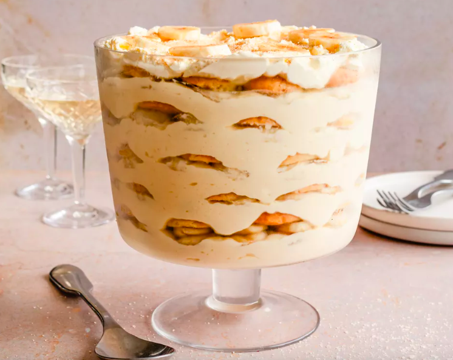

The Best Banana Pudding

Description
"The best no bake banana pudding you will ever find (or so I've been told by many)." -Recipe by Kenneth Strother
Listed below are the ingredients needed and instructions on how to bake these delicious treats. This recipe yields 20 servings
Ingredients
- 1 (5 ounce) package instant vanilla pudding mix
- 2 cups cold milk
- 1 (14 ounce) can sweetened condensed milk
- 1 tablespoon vanilla extract
- 1 (12 ounce) container frozen whipped topping, thawed
- 1 (16 ounce) package vanilla wafers
- 14 bananas, sliced
Steps
- In a large mixing bowl, beat pudding mix and milk 2 minutes. Blend in condensed milk until smooth. Stir in vanilla and fold in whipped topping. Layer wafers, bananas, and pudding mixture in a glass serving bowl. Chill until serving.